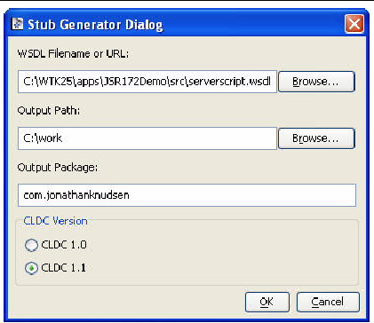

| Sun Java Wireless Toolkit for CLDC User's Guide |
| Sun Java Wireless Toolkit for CLDC User's Guide |
| C H A P T E R 12 |
|
Using Web Services |
The Sun JavaTM Wireless Toolkit for CLDC emulator supports JSR 172, the J2ME Web Services Specification. JSR 172 provides APIs for accessing web services from mobile applications. It also includes an API for parsing XML documents.
The Sun JavaTM Wireless Toolkit for CLDC provides a stub generator that automates creating source code for accessing web services. To get to the stub generator, choose File > Utilities. Click Stub Generator and press Launch.
FIGURE 12-1 Web Services Stub Generator

In the field WSDL Filename or URL supply the path to the Webservices Description Language (WSDL) file for the web service you want to access. The Output Path indicates the location where you want the stub files to be placed. Output Package indicates the Java programming language package name for the stub files. Finally, choose whether you want to generate CLDC 1.0 or CLDC 1.1 stubs.
Press OK to generate the stub files.
| Sun Java Wireless Toolkit for CLDC User's Guide |
Copyright © 2007, Sun Microsystems, Inc. All Rights Reserved.